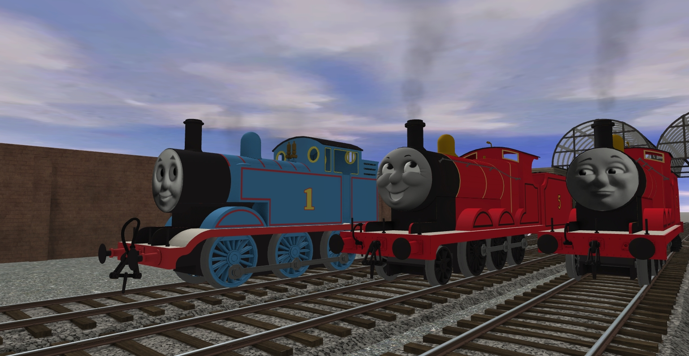
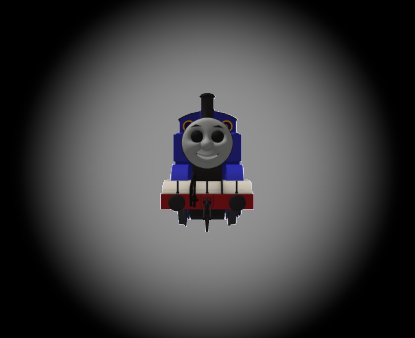

Thomas the Tank Engine V3 and James the Red Engine!

- Credits in Models but anyways
- Thanks to OhShootTre, Tubular, Max, Jamos, and Grayson for their public drives
Edward the Blue Engine V1
- Credits are in the engines read me file.
Pack Scale (Gauge 3.5) Thomas!
- Whistle and Theme from the wiki, wheels by Max and face by Tubular!
Void Thomas.

- Same credits as Thomas V3